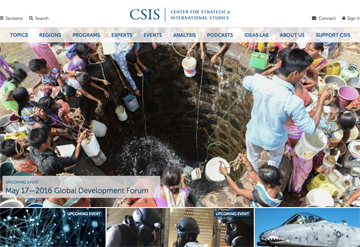
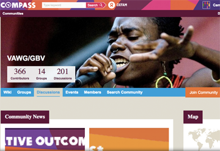

Center for Strategic and International Studies
Architected and executed a complete rebuild of the site for one of the world's largest think tanks. Includes deep
integration with Soundcloud, Youtube, S3, Apache Solr, and Fast.ly. Involved an enormous migration and
content re-architecture from the previous Drupal 5 site.
CSIS.org

Oxfam International global intranet
Strategy, architecture, and development for Oxfam's worldwide knowledge sharing portal. Integrates external
systems such as Box, Okta, and LDAP to bring all of Oxfam's people, documents, and knowledge together
into a single site. Included an enormous migration from the previous Drupal 6 site.

Tempus aliquam veroeros
Nunc blandit nisi ligula magna sodales lectus elementum non. Integer id venenatis velit.

Aliquam ipsum sed dolore
Nunc blandit nisi ligula magna sodales lectus elementum non. Integer id venenatis velit.

Cursis aliquam nisl
Nunc blandit nisi ligula magna sodales lectus elementum non. Integer id venenatis velit.

Sed consequat phasellus
Nunc blandit nisi ligula magna sodales lectus elementum non. Integer id venenatis velit.

Mauris id tellus arcu
Nunc blandit nisi ligula magna sodales lectus elementum non. Integer id venenatis velit.

Nunc vehicula id nulla
Nunc blandit nisi ligula magna sodales lectus elementum non. Integer id venenatis velit.

Neque et faucibus viverra
Nunc blandit nisi ligula magna sodales lectus elementum non. Integer id venenatis velit.

Mattis ante fermentum
Nunc blandit nisi ligula magna sodales lectus elementum non. Integer id venenatis velit.

Sed ac elementum arcu
Nunc blandit nisi ligula magna sodales lectus elementum non. Integer id venenatis velit.

Vehicula id nulla dignissim
Nunc blandit nisi ligula magna sodales lectus elementum non. Integer id venenatis velit.


{kind=link}
{kind=link}